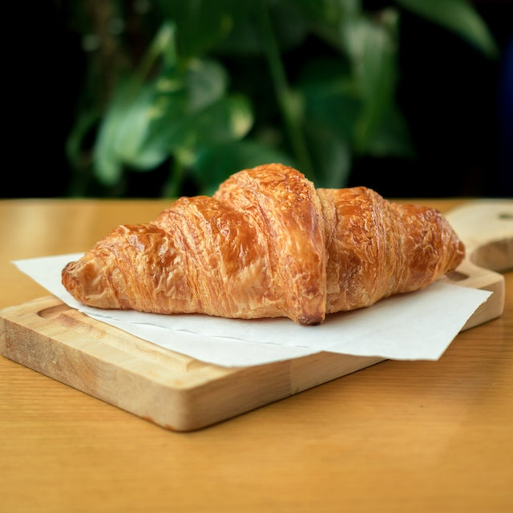
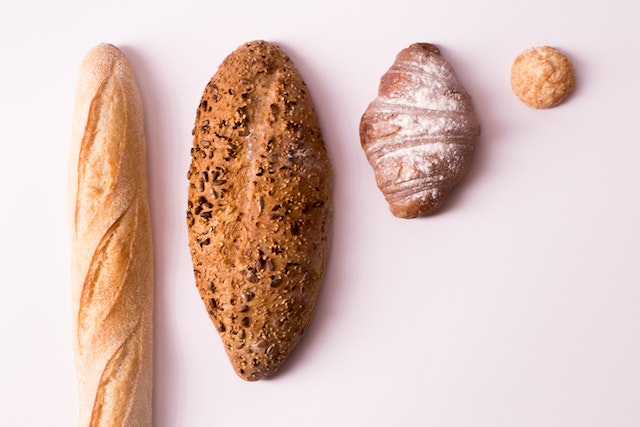
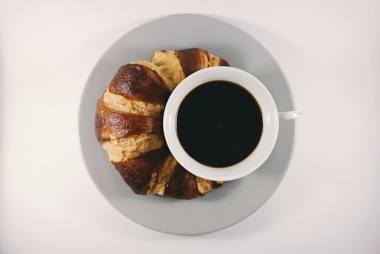
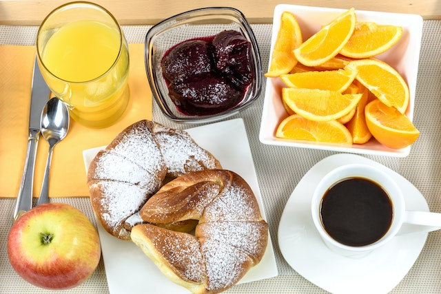

SOURCES
| IMAGE | AUTHOR | LINK |
|---|---|---|
| Lina Kivaka | Pexels | |
 |
Maria Orlova | Pexels |
| JÉSHOOTS | Pexels | |
| Lina Kivaka | Pexels | |
| Valeria Boltneva | Pexels | |
 |
Anna Shvets | Pexels |
| Gareth Busby | ||
|  | Abdulrhman Alkady | Pexels |
|  | Mariana Kurnyk | Pexels |
|  | Brigitte Tohm | Pexels |
| Lisa Fotios | Pexels | |
|  | PhotoMIX Company | Pexels |
| Negative Space | Pexels |